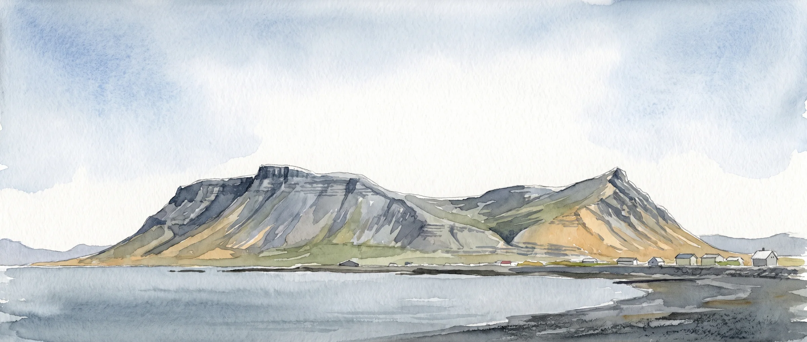

Aðstoð við kaupendur og seljendur fasteigna vegna ágreinings um galla, leigu eða vanefndir.


Lögfræðiþjónusta Akraness
Fastur punktur þegar á reynir
Vönduð lögfræðiþjónusta fyrir einstaklinga og fyrirtæki á Akranesi á öllum helstu réttarsviðum lögfræðinnar.
Um okkur
Baldvin Már Kristjánsson
Lögfræðiþjónusta Akraness hefur verið rekin frá árinu 2011. Við sinnum málum einstaklinga og fyrirtækja á Akranesi og nágrenni.
Lögmaður stofunnar lauk meistaraprófi í lögfræði árið 2019 og hefur starfað sem sjálfstætt starfandi lögmaður frá árinu 2022.
Alhliða lögfræðiþjónusta
Vönduð og persónuleg lögfræðiþjónusta á Akranesi
Við veitum einstaklingum og fyrirtækjum á Akranesi og nágrenni lögfræðiráðgjöf og gætum hagsmuna þeirra við samningagerð, úrlausn ágreinings og málflutning fyrir dómstólum.
Aðstoð við dánarbússkipti, hvort sem um ræðir einkaskipti eða opinber skipti, erfðaskrár og almenn ráðgjöf.
Hagsmunagæsla í sakamálum á rannsóknarstigi og fyrir dómi: verjendastörf í þágu sakborninga og réttargæsla fyrir þolendur afbrota.
Aðstoð við innheimtu slysabóta og bótakröfur vegna umferðarslysa, vinnuslysa og annarra slysa. Sjá nánar á botastofan.is.
Málssókn og málsvörn fyrir dómstólum og í stjórnsýslumálum.
Aðstoð við gerð sambúðarsamninga eða kaupmála. Hagsmunagæsla vegna skilnaðarmála og í deilum er snúa að forsjá og/eða umgengni barna.
Aðstoð við stofnun félaga, hluthafasamninga, samningagerð og lögfræðileg álitaefni í rekstri.
Við aðstoðum við skjalagerð og samninga, hvort sem um er að ræða kaupsamninga, afsalsgerninga eða eitthvað annað.
Aðstoð við innheimtu krafna fyrir einstaklinga og fyrirtæki, og við þá sem fá innheimtubréf.

Lögfræðiþjónusta á Akranesi frá 2011
Algengar spurningar
Það sem fólk spyr oftast um
Get ég hitt lögmann á Akranesi?
Já, viðtöl eru eftir tímabókun á Akranesi sé þess óskað. Hafðu samband til að finna hentugan tíma.
Hvernig panta ég viðtal?
Þú getur óskað eftir viðtali í síma 857 8660, með tölvupósti á baldvin@delikt.is eða í gegnum fyrirspurnarformið hér á síðunni. Nægilegt er að lýsa erindinu í stuttu máli og láta fylgja upplýsingar um hvernig best sé að ná í þig.
Hvað kostar að leita til ykkar?
Fyrsta viðtal er án endurgjalds og án skuldbindingar. Kostnaður við frekari vinnu fer eftir eðli og umfangi verkefnisins og samið er um gjaldtöku áður en sú vinna hefst. Almennt tímagjald lögmanns er 35.900 kr. + vsk.
Hafa samband
Fyrsta viðtal er án endurgjalds
Hringdu, sendu tölvupóst eða lýstu erindinu í forminu. Við semjum svo saman um framhaldið ef þú vilt fá aðstoð við málið.